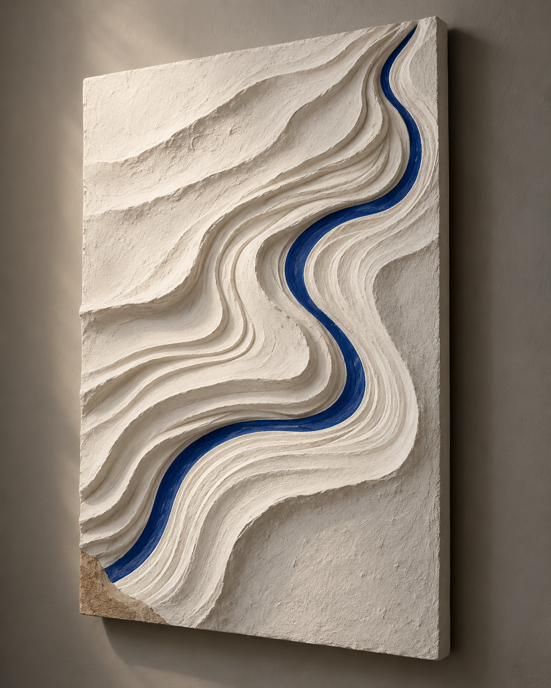
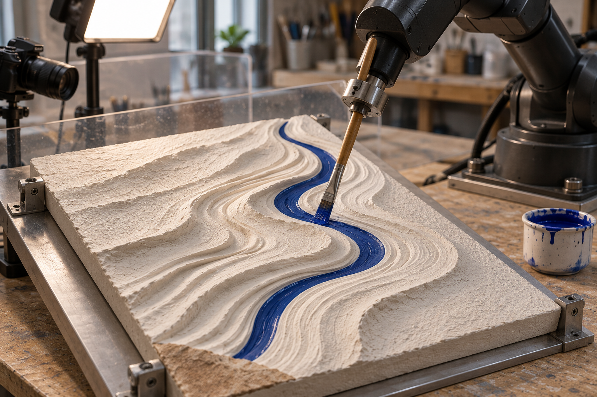
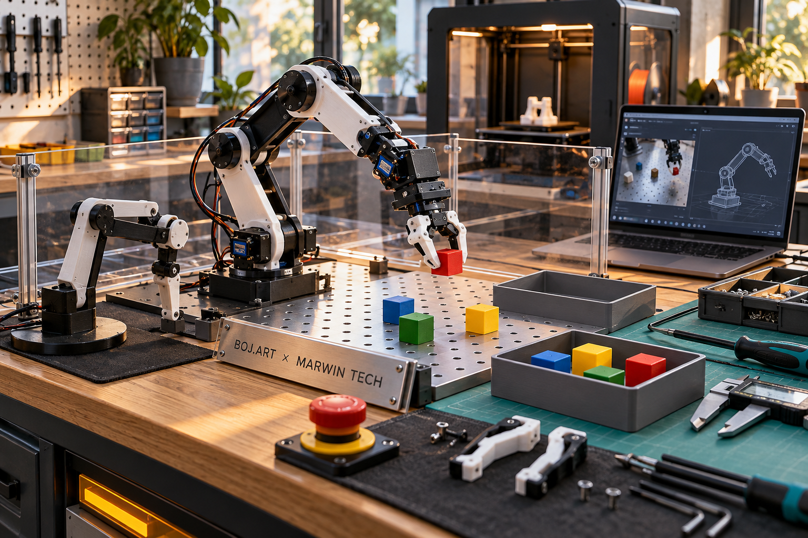

Versions extraites des PDF, sans nouvelle génération. L’identité avec les originaux Library n’est pas vérifiée. Ce sont des intentions générées par IA, pas des photographies de réalisations.
Les 59 conversations ont été retentées : 9 lectures supplémentaires réussies, 50 encore refusées ou sans réponse. Total cumulé : 169 / 219. Aucune nouvelle mention directe de Carlone dans les échanges restitués.

1122 × 1402 pixels — extrait de la page 1.

1536 × 1024 pixels — extrait de la page 3.

1536 × 1024 pixels — extrait de la page 9.
Le visuel « Atelier MARWIN TECH, art et robotique » reste sans correspondance certaine. Les quatre fichiers originaux de la bibliothèque demeurent non vérifiés. Provenance et bilan détaillé.